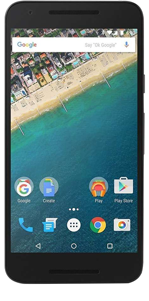

Emulator

Enter the location of any .html fiile into the box above, and click the play button to start.
doDL(editor.getSession().getValue())Emulator
Enter the location of any .html fiile into the box above, and click the play button to start.
doDL(editor.getSession().getValue())